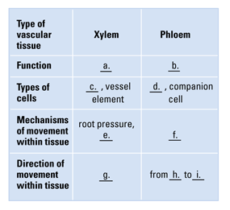
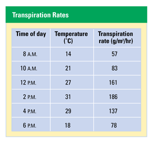
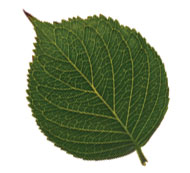

Reviewing Concepts
Multiple Choice
Choose the letter of the best answer.
1. What is a plant's primary source of carbon?
a. soil
b. water
c. air
d. fertilizer
2. Crop rotation involves
a. moving plants to face the sun.
b. taking advantage of corn's ability to fix magnesium.
c. rotating nitrogen-fixing legume crops with non-legume crops each year.
d. all of the above.
3. Mycorrhizae are
a. the sites of nitrogen fixation in nodules.
b. the associations of many plants' roots with fungi.
c. cells that control the exchange of gases by leaves.
d. extensions of the leaves that increase water absorption.
4. Which of the following is true of transpiration?
a. generates a pulling force within a plant
b. causes plant to lose water through its leaves
c. occurs via stomata
d. all of the above
5. Companion cells
a. surround stomata in leaves.
b. form partnerships with xylem tissue.
c. fix nitrogen.
d. neighbor sieve tubes in the phloem.
6. Epiphytes are not like other plants because they
a. can't photosynthesize.
b. eat animals.
c. grow in extremely dry deserts.
d. grow without soil.
7. Mistletoe is
a. a plant.
b. photosynthetic.
c. a parasite.
d. all of the above.
Short Answer
8. Explain how the nutritional requirements of plants differ from those of animals.
9. Explain why nitrogen fixation is important.
10. What are root hairs? What is their function in a plant?
11. How are cohesion and adhesion involved in the movement of water through a plant?
12. Compare and contrast two kinds of xylem cells.
13. Describe what happens to the guard cells around an opening stoma.
14. Describe the direction of sugar movement in a plant.
15. Give two examples of plant parts that are sugar sinks.
16. Describe the typical habitat of an epiphyte.
17. Compare and contrast the nutritional adaptations of a carnivorous plant and a parasitic plant.
Visualizing Concepts
18. Complete the table below by filling in the blanks.

Applying Concepts
Analyzing Information
19. Analyzing Data The table below records temperature and rates of transpiration at different hours of the day.
a. Describe the apparent relationship between temperature and transpiration rate. It may help you to draw a line graph first.
b. Hypothesize a reason why temperature affects transpiration rate in this way.

20. Analyzing Photos Examine the photo below and answer the questions.
a. What kinds of sap do you expect to find in the veins of this leaf?
b. Hypothesize the direction of travel for each kind of sap. Explain.

Critical Thinking
21. Evaluating the Impact of Research Describe how van Helmont's result contradicted Aristotle's hypothesis that a plant obtains its mass from the soil.
22. Evaluating Promotional Claims A bag of 5-10-5 fertilizer at the garden shop claims to give your house plants "everything they need." Evaluate this claim.
23. Comparing and Contrasting How are the effects of root pressure and the pressure-flow mechanism of phloem sap similar? How are they different?
24. Problem Solving Your new job as a field biologist requires you to classify new plant species with unique adaptations for nutrition. One of the first things you must determine is whether a specimen's mode of nutrition is carnivorous, epiphytic, or parasitic. Form a list of questions about each new specimen's anatomy and habitat that you would need to answer in order to classify it.
25. What's Wrong With These Statements?
Briefly explain why each statement is inaccurate or misleading.
a. Plants absorb proteins from the soil.
b. Mycorrhizae are parasitic fungal growths on plant roots.
c. Transpiration prevents a plant from wilting.
Performance Assessment
Design an Experiment Use glassware and/or other materials in the classroom or your kitchen to design a non-living model for how water moves up a tree.